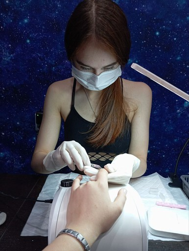
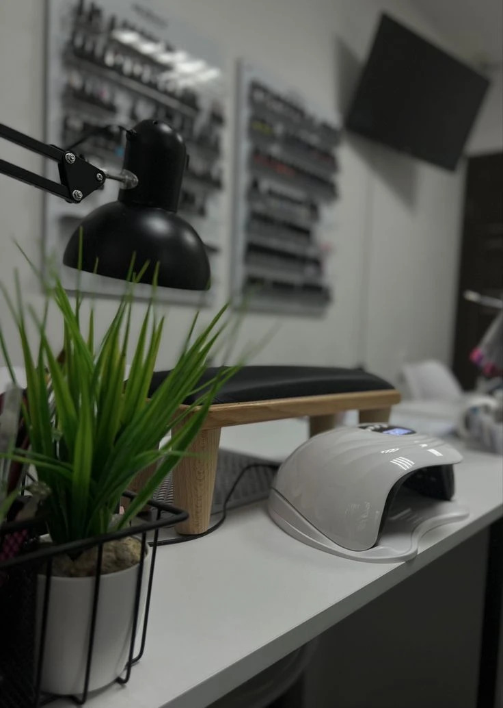
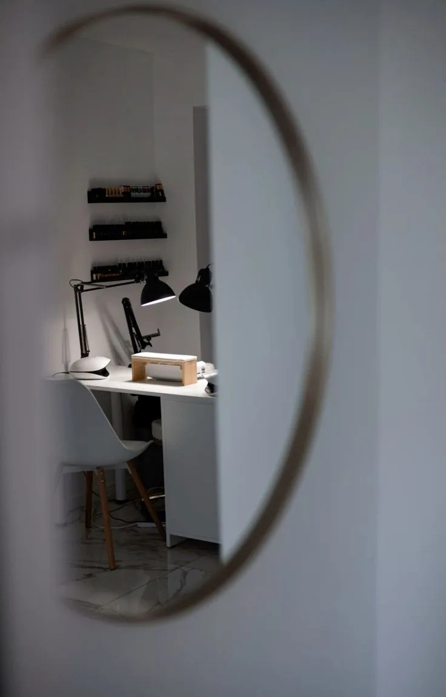
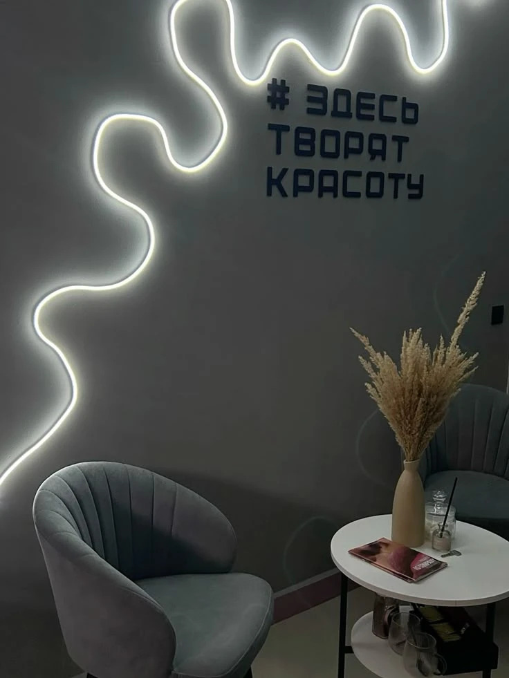
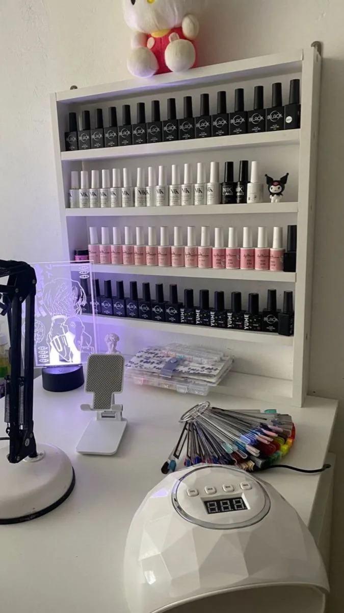
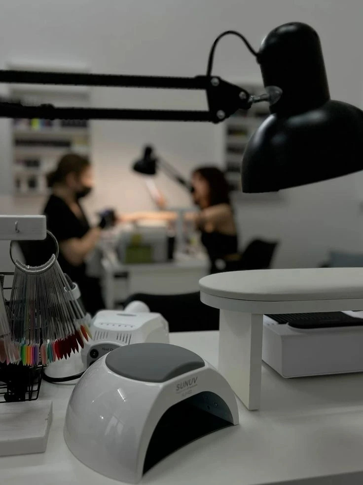

Обо мне
Я Анна — ваш мастер маникюра, и для меня это не просто работа, а настоящее призвание.Я вкладываю всю душу в каждое покрытие, в каждую деталь, чтобы ваши ручки выглядели идеально. Моя главная задача – это не только красота, но и, конечно, здоровье и безопасность ваших ноготков. Поэтому я всегда уделяю особое внимание стерилизации инструментов и использую только качественные материалы.
Почему выбирают меня?
- Профессионализм: Клиенты ценят мой глубокий профессионализм, который проявляется в каждом этапе работы. Это не просто механическое выполнение процедуры, а искусство, основанное на обширных знаниях и постоянном развитии. Я владею всеми современными техниками маникюра, постоянно повышаю свою квалификацию на обучающих курсах и мастер-классах, слежу за новейшими тенденциями и продуктами в индустрии. Это гарантирует не только идеально выполненную работу – от аккуратной обработки кутикулы до безупречного нанесения покрытия – но и способность справиться с ногтями любой сложности, достигая эстетически совершенного и долговечного результата.
- Безопасность:Здоровье и безопасность моих клиентов – это абсолютный приоритет. Именно поэтому я уделяю максимальное внимание строжайшему соблюдению всех санитарных норм и правил. Весь многоразовый инструмент проходит полный цикл дезинфекции и стерилизации в соответствии с медицинскими стандартами. Одноразовые расходные материалы используются строго один раз для каждого клиента и утилизируются. В моем кабинете всегда чистота и порядок, что создает комфортную и безопасную атмосферу, позволяя клиентам полностью расслабиться и не беспокоиться о своем здоровье.
- Индивидуальный подход:Я убеждена, что не существует двух одинаковых клиентов или одинаковых ногтей. Поэтому я всегда уделяю время, чтобы внимательно выслушать пожелания каждого, понять его образ жизни, предпочтения в стиле и даже настроение. Я предлагаю не просто шаблонные решения, а создаю уникальный дизайн и выбираю технику, которая идеально подходит именно этому человеку, учитывая форму ногтей, состояние кожи рук, цвет волос и даже гардероб. Я даю профессиональные рекомендации по выбору цвета, формы и дизайна, а также по уходу за руками и ногтями в домашних условиях, чтобы сохранить результат как можно дольше и улучшить их общее состояние.
- Стойкость: Клиенты возвращаются ко мне снова и снова, потому что знают: мой маникюр – это не только красиво, но и невероятно стойко. Я работаю исключительно с высококачественными, сертифицированными материалами от проверенных брендов, которые доказали свою надежность и безопасность. Строгое соблюдение технологии нанесения гель-лака – от тщательной подготовки ногтевой пластины и правильного нанесения базы до идеального выравнивания и запечатывания топом – гарантирует, что покрытие продержится без единого скола, трещины или отслойки до следующей коррекции. Мои клиенты получают уверенность в безупречном виде своих рук на протяжении всего этого времени, что экономит их время и силы.
Свяжитесь со мной
Если у вас есть вопросы или вы хотите узнать больше о наших услугах, не стесняйтесь обращаться ко мне. Я всегда рада помочь!